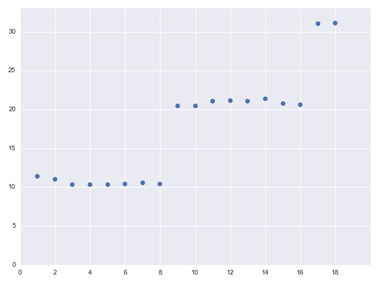
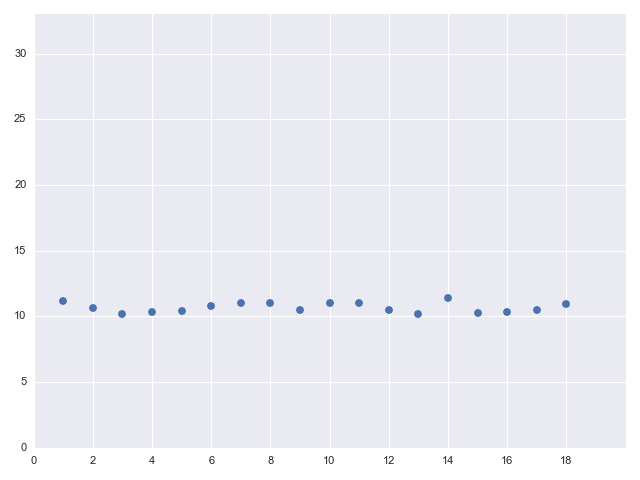

This article is an attempt to dig into the performance problem of concurrent applications using core.async in situations where blocking operations are involved. "Blocking" operations happen when the running program has to wait for something happening outside it; a canonical example is issuing an HTTP request and waiting for the remote server to respond. Such operations are also sometimes called "synchronous".
The core.async library comes with many high-level features like transducers and pipelines; in this article I want to focus on the two fundamental mechanisms it provides for launching a new computation concurrently: threads and go-blocks.
New threads can be created with (thread ...). This call runs the body in a new thread and (immediately) returns a channel to which the result of the body will be posted. Similarly, a go-block is created with (go ...) - it also launches the computation concurrently, but instead of creating a new thread it posts the computation onto a thread pool of fixed size that the library maintains for all its go-blocks. Most of the article is focusing on exploring the differences between these two methods.
The go-block thread pool
In any given executing Clojure process, a single thread pool is dedicated to running all go-blocks. A quick glance at the Clojure source code shows that the size of this pool is 8, meaning that 8 physical threads are launched [1]. This number is hard-coded, though it can be modified by setting the clojure.core.async.pool-size property for the JVM running the program. So 8 is the default number of threads core.async has at its disposal to implement its ad-hoc cooperative multitasking.
Let's start with a cute little experiment to determine the size of the thread pool empirically; this exercise will also shed some light on the effect of blocking calls inside go-blocks:
(defn launch-n-go-blocks
[n]
(let [c (async/chan)]
(dotimes [i n]
(async/go
(Thread/sleep 10)
(async/>! c i)))
(receive-n c n)))
This function launches n go-blocks, each sleeping for 10 milliseconds and then pushing a number into a shared channel. Then it waits to receive all numbers from the channel and returns; the effect is to block until all the go-blocks are done. receive-in is a simple function used throughout this article:
(defn receive-n
"Receive n items from the given channel and return them as a vector."
[c n]
(loop [i 0
res []]
(if (= i n)
res
(recur (inc i) (conj res (async/<!! c))))))
Now let's call launch-n-go-blocks several times, with an increasing n and observe what happens:
Launching 1 -> "Elapsed time: 11.403985 msecs"
Launching 2 -> "Elapsed time: 11.050685 msecs"
Launching 3 -> "Elapsed time: 10.37412 msecs"
Launching 4 -> "Elapsed time: 10.342037 msecs"
Launching 5 -> "Elapsed time: 10.359517 msecs"
Launching 6 -> "Elapsed time: 10.409539 msecs"
Launching 7 -> "Elapsed time: 10.543612 msecs"
Launching 8 -> "Elapsed time: 10.429726 msecs"
Launching 9 -> "Elapsed time: 20.480441 msecs"
Launching 10 -> "Elapsed time: 20.442724 msecs"
Launching 11 -> "Elapsed time: 21.115002 msecs"
Launching 12 -> "Elapsed time: 21.192993 msecs"
Launching 13 -> "Elapsed time: 21.113135 msecs"
Launching 14 -> "Elapsed time: 21.376159 msecs"
Launching 15 -> "Elapsed time: 20.754207 msecs"
Launching 16 -> "Elapsed time: 20.654873 msecs"
Launching 17 -> "Elapsed time: 31.084513 msecs"
Launching 18 -> "Elapsed time: 31.152651 msecs"
Ignoring the minor fluctuations in measurements, there's a very clear pattern here; let's plot it:
The reason for this behavior is the blocking nature of Thread/sleep. This function blocks the current thread for the specified duration (10 ms in our case); so the go-block executing it will block the thread it's currently running on. This thread is then effectively out of the pool until the sleep finishes. The plot immediately suggests the pool size is 8; as long as 8 or fewer go-blocks are launched, they all finish within ~10 ms because they all run concurrently. As soon as we go above 8, the runtime jumps to ~20 ms because one of the go-blocks will have to wait until there's a free thread in the pool.
Let's try the same experiment using thread instead of go:
(defn launch-n-threads
[n]
(let [c (async/chan)]
(dotimes [i n]
(async/thread
(Thread/sleep 10)
(async/>!! c i)))
(receive-n c n)))
Here, each time through the loop a new thread is launched, regardless of the number of threads already executing [2]. All these threads can run concurrently, so the runtime plot is:
The Clojure documentation and talks / presentations by developers are careful to warn against running blocking operations in go-blocks [3]; it's also not hard to understand why this is so by thinking a bit about the fixed thread-pool based implementation. That said, it's still useful to actually see this in action using an easy-to-understand experiment. In the next section we'll explore the real-life performance implications of blocking inside go-blocks.
Blocking I/O
The sleeping example shown earlier is artificial, but the perils of blocking inside go-blocks are real. Blocking happens quite often in realistic programs, most often in the context of I/O. I/O devices tend to be significantly slower than the CPU executing our program, especially if by "I/O device" we mean a web server located half-way across the world to which we issue an HTTP request.
So the next example is going to be a simple concurrent HTTP client; again, two versions are studied and compared - one with go-blocks, another with threads. For this sample, we'll be using the clj-http library [4], which provides a simple API to issue blocking HTTP requests. The full code is available on GitHub.
(def url-template "https://github.com/eliben/pycparser/pull/%d")
(defn blocking-get-page [i]
(clj-http.client/get (format url-template i)))
(defn go-blocking-generator
[c start n]
(doseq [i (range start (+ start n))]
(async/go (async/>! c (blocking-get-page i)))))
When go-blocking-generator is called, it launches n go-blocks, each requesting a different page from pycparser's pull requests on GitHub. Fetching one page takes between 760 and 990 ms on my machine, depending on the exact page. When run with n=20, this version takes about 2300 ms. Now let's do the same with threads:
(defn thread-blocking-generator
[c start n]
(doseq [i (range start (+ start n))]
(async/thread (async/>!! c (blocking-get-page i)))))
With n=20, this version takes only 1000 ms. As expected, all threads manage to run at the same time, which is mostly spent waiting on the remote server. In the go-blocks version, only 8 blocks run concurrently because of the thread pool size; this example should really drive home the notion of just how bad blocking I/O in go-blocks is. Most of the blocks sit there waiting for the thread pool to have a vacant spot, when all they have to do is just issue a HTTP request and wait anyway.
Parallelizing CPU-bound tasks
We've seen how go-blocks interact with blocking operations; now let's examine CPU-bound tasks, which spend their time doing actual computations on the CPU rather than waiting for I/O. In an older post, I explored the effects of using threads and processes in Python to parallelize a simple numeric problem. Here I'll be using a similar example: naïvely factorizing a large integer.
Here's the function that factorizes a number into a vector of factors:
(defn factorize
"Naive factorization function; takes an integer n and returns a vector of
factors."
[n]
(if (< n 2)
[]
(loop [factors []
n n
p 2]
(cond (= n 1) factors
(= 0 (mod n p)) (recur (conj factors p) (quot n p) p)
(>= (* p p) n) (conj factors n)
(> p 2) (recur factors n (+ p 2))
:else (recur factors n (+ p 1))))))
It takes around 2.3 ms to factorize the number 29 * 982451653; I'll refer to it as mynum from now on [5]. Let's examine a few strategies of factorizing a large set of numbers in parallel. We'll start with a simple "serial" factorizer, which should also introduce the API:
(defn serial-factorizer
"Simple serial factorizer."
[nums]
(zipmap nums (map factorize nums)))
Each factorizer function in this sample takes a sequence of numbers and returns a new map, which maps a number to its vector of factors. If we run serial-factorizer on a sequence of 1000 mynums, it takes ~2.3 seconds; no surprises here!
Now, a parallel factorizer using go-blocks:
(defn async-go-factorizer
"Parallel factorizer for nums, launching n go blocks."
[nums n]
;;; Push nums into an input channel; spin up n go-blocks to read from this
;;; channel and add numbers to an output channel.
(let [in-c (async/chan)
out-c (async/chan)]
(async/onto-chan in-c nums)
(dotimes [i n]
(async/go-loop []
(when-let [nextnum (async/<! in-c)]
(async/>! out-c {nextnum (factorize nextnum)})
(recur))))
(receive-n-maps out-c (count nums))))
In a pattern that should be familiar by now, this function creates a couple of local channels and spins up a number of go-blocks to read and write from these channels; the code should be self-explanatory. receive-n-maps is similar to the receive-n function we've seen earlier in the article, just with maps instead of vectors.
Knowing that my machine has 8 CPU threads (4 cores, hyper-threaded), I benchmarked async-go-factorizer with n=8, and it took around 680 ms, a 3.4x speedup over the serial version [6].
Let's try the same with threads instead of go-blocks:
(defn async-thread-factorizer
"Same as async-go-factorizer, but with thread instead of go."
[nums n]
(let [in-c (async/chan)
out-c (async/chan)]
(async/onto-chan in-c nums)
(dotimes [i n]
(async/thread
(loop []
(when-let [nextnum (async/<!! in-c)]
(async/>!! out-c {nextnum (factorize nextnum)})
(recur)))))
(receive-n-maps out-c (count nums))))
The performance is pretty much the same - 680 ms for 1000 numbers with parallelism of n=8.
This is an important point! On purely CPU-bound workloads, go-blocks are no worse than threads because all the physical cores are kept busy doing useful work at all time. There's no waiting involved, so there's no opportunity to steal an idle core for a different thread. One minor gotcha is to be wary of the go-block thread pool size; if you run your program on a dual socket machine with dozens of cores, you may want to bump that number up and use a wider parallelism setting.
For completeness (and fun!) let's try a couple more methods of parallelizing this computation. The pattern in these parallel factorizers is so common that core.async has a function for it - pipeline; here's how we use it:
(defn async-with-pipeline
"Parallel factorizer using async/pipeline."
[nums n]
(let [in-c (async/chan)
out-c (async/chan)]
(async/onto-chan in-c nums)
(async/pipeline n out-c (map #(hash-map % (factorize %))) in-c)
(receive-n-maps out-c (count nums))))
async/pipeline takes an input channel, output channel and a transducer, as well as the parallelism. It takes care of spinning go-blocks and connecting all the channels properly [7]. This takes about the same amount of time as the other versions shown earlier, which isn't surprising.
Finally, let's try something slightly different and use Clojure's parallel fold from the clojure.core.reducers library (both fold and transducers are described in my earlier article - check it out!)
(defn conjmap
([xs x] (conj xs x))
([] {}))
(defn rfold
"Parallel factorizer using r/fold."
[nums]
(r/fold conjmap (r/map #(hash-map % (factorize %)) nums)))
Here we don't have to set the parallelism; r/fold determines it on its own. This approach takes 1.15 seconds on 1000 numbers, quite a bit slower than the earlier attempts. It's entirely possible that the fork-join approach used by r/fold is less efficient than the manual chunking to different threads done by the other versions.
The conclusion from this section, however, should be that for purely CPU-bound tasks it doesn't matter much whether go-blocks or explicit threads are used - the performance should be more-or-less the same. That said, realistic programs don't often spend time purely in CPU-bound tasks; the reality is usually somewhere in between - some tasks do computations, other tasks wait on things. Let's see a benchmark that combines the two.
Combining blocking and CPU-bound tasks
This section shows an artificial benchmark that explores how a combination of blocking and CPU-bound tasks behaves when launched on go-blocs vs. threads. The CPU bound task will be the same factorization but this time with a larger number that was carefully tuned to take about 230 ms to factorize on my machine. The blocking "task" will be (Thread/sleep 250). I deliberately choose the same duration for the two kinds of tasks here to make comparisons easier, but the principle applies more generally.
Here is the go-block version of the benchmark:
(defn launch-go-blocking-and-compute
[nblock ncompute]
(let [c (async/chan)]
(dotimes [i nblock]
(async/go
(Thread/sleep 250)
(async/>! c i)))
(dotimes [i ncompute]
(async/go
(async/>! c (factorize mynum))))
(receive-n c (+ nblock ncompute))))
nblock is the number of blocking tasks to launch; ncompute is the number of CPU-bound tasks to launch. The rest of the code is straightforward. You can guess what the threading version looks like by now - check out the full code sample if not.
The parameter space here is pretty large; let's try 32 blocking and 16 compute tasks in parallel:
nblock=32, ncompute=16
launch-go-blocking-and-compute: 1521 ms
launch-thread-blocking-and-compute: 530 ms
The larger we set nblock, the worse the situation becomes for the go-block version:
nblock=64, ncompute=16
launch-go-blocking-and-compute: 3200 ms
launch-thread-blocking-and-compute: 530 ms
Up to some limit, the threading version is only limited by ncompute, since these actually occupy the CPU cores; all the blocking tasks are run in the background and can complete at the same time (after the initial 250 ms).
The go-block version fares much worse, because the blocking tasks can occupy threads while the compute tasks just wait in a queue. Depending on the exact mixture of blocking and compute-bound tasks, this can range from more-or-less the same to exteremely bad for the go-blocks version. YMMV!
Managing callback-hell with go-blocks
We've seen the issues that come up when mixing blocking I/o with go-blocks. The reason for this is the cooperative concurrency approach implemented by go-blocks on top of a fixed thread pool. For cooperative concurrency to work well with I/O, the language should either make the scheduler aware of the I/O calls (to be able to switch to another context while blocking) or the I/O should be non-blocking. The former requires runtime support in the language, like Go; the latter is what programming environments like Python (with asyncio) and Node.js (with its fully non-blocking standard library) do. The same applies to Clojure, where core.async is just a library without actual runtime support.
The good news is that non-blocking I/O libraries are very popular these days, and Clojure has a good number of them for all the common tasks you can think of. Another good news is that core.async's channels make it very easy to deal with non-blocking I/O without sliding into callback hell.
Here's a code sample that uses the asynchronous mode of clj-http to repeat the concurrent HTTP request benchmark:
(defn go-async-generator
[c start n]
(doseq [i (range start (+ start n))]
(clj-http.client/get
(format url-template i)
{:async? true}
(fn [response]
(async/go (async/>! c response)))
;; Exception callback.
(fn [exc]
(throw exc)))))
When passed the {:async? true} option, clj-http.client/get does a non-blocking request with a callback for the response (and another callback for an error). Our "response callback" simply spins a go-block that places the response into a channel. Now another go-block (or thread) can wait on the channel to perform the next step; compare that to cascading callbacks!
The performance is good too - when run with multiple requests in parallel, this version runs as fast as the thread-launching example from earlier in the article (the full code is here). All the get requests are launched one after another, with no blocking. When the results arrive, go-blocks patiently "park" while sending them into a channel, but this is an explicit context-switch operation, so all of them peacefully run concurrently on the underlying thread pool.
Conclusion
Would launching a thread inside the callback work as well in the last example? Yes, I think it would. So why use go-blocks?
The reason is scalability. Launching threads is fine as long as you don't have too many, and as long as the latency of the launch is not too important. Threads are OS constructs and have fairly heavy resource requirements - in terms of memory consumption and context-switching time. go-blocks are extremely lightweight in comparison.
Therefore, if you want to serve 1000s of connections concurrently from a single machine - go-blocks are the way to go, combined with non-blocking APIs. Note that go-blocks use a thread pool that can use multipe cores, so this isn't just a single-core concurrent multitasking solution (such as you may encounter in Node.js or Python's asyncio).
If the number of concurrent tasks is not too large or blocking I/O is involved, I'd recommend using async/thread. It avoids the pitfalls of blocking I/O, and in other cases performance is the same. core.async's wonderful tools like channels and alts!! are still available, making concurrent programming much more pleasant.
However, note that Clojure is a multi-environment language, and in some environments (most notably ClojureScript), threads are simply unavailable. In these cases using go-blocks is your only chance at any kind of reasonable concurrency (the alternative being callbacks).
Another use case for go-blocks is to implement coroutines which can be useful in some cases - such as agents in games, as a replacement for complex state machines, etc. But here again, beware of the actual scale. If it's possible to use threads, just use threads. go-blocks are trickier to use correctly and one has to be always aware of what may block, lest performance is dramatically degraded.
If there's something I'm missing, please let me know!
| [1] | This is for the standard JVM implementation of Clojure; in ClojureScript there would just be a single thread, since JS doesn't support in-browser threads (yet). |
| [2] | The JVM also has some limit on the number of threads it runs at the same time, but it's fairly high so we'll ignore it here. |
| [3] | W.r.t. transgressions committed in the code sample show here, Thread/sleep is a big no-no inside go-blocks. By now I hope that it's obvious why. timeout is the right function for "waiting" inside go-blocks, since it "parks" the go-block rather than blocking it. Parking is go-block friendly since it actually frees up the thread the go-block is running on. Similarly, >! is the right channel sending function to use inside go-blocks; >!! blocks the whole thread. This is also a good place to mention that similar thread pool size "artifacts" can be found in Node.js, which uses libuv to handle events. libuv uses its own thread pool to execute blocking calls, thus giving the calling application a sense of concurrency (up to some thread pool size). |
| [4] | This sample is inspired by Martin Trojer's blog post, which is the best introduction to the issues with blocking I/O in go-blocks I found before starting this article. |
| [5] | Why this particular number? The second factor is a large-ish prime, so it will make the factorizer sweat a bit (by iterating over all the odd numbers up to its square root); the multiplication by another (prime) factor ensures more of the paths in the factorize function are exercised. |
| [6] | Benchmarking multi-core CPU performance with modern CPUs is notoriously tricky; CPUs regulate their frequency based on load, so it's entirely possible that a single core runs faster than each one core in a group of 4; also, hyper-threading reuses some CPU resources within each core so its speedup is rarely linear. |
| [7] | Note that pipeline spins up go-blocks by default, so the cautions explored in this article apply. There's also pipeline-blocking if you need blocking operations. Looking at the implementation if pipeline is actually pretty illuminating, and should be easy to understand given what we discuss here. |